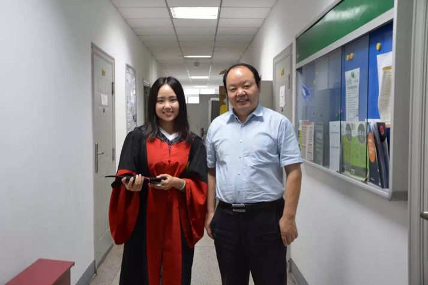
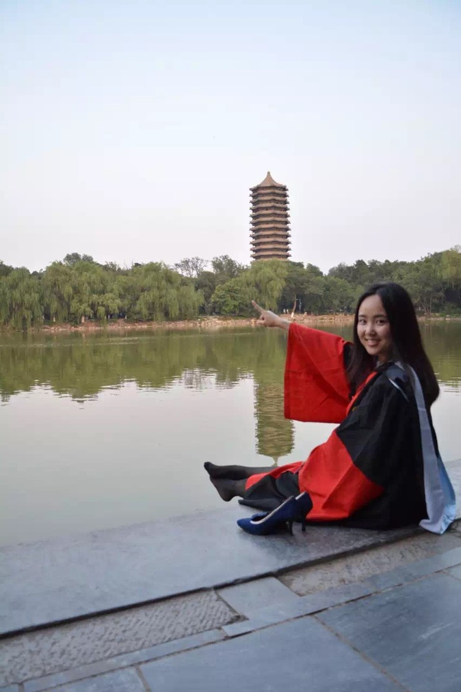
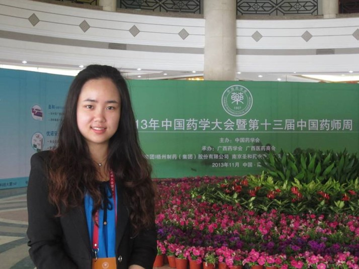
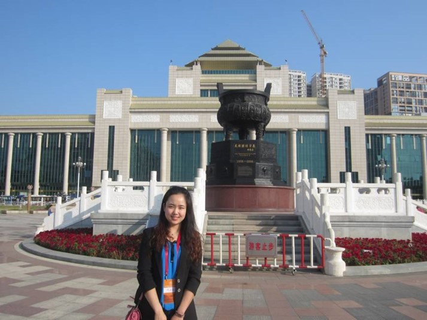

课题组成员
王晗 博士（2013-2016，2009-2012）

E-mail：aga1026@126.com
毕业去向
大连医科大学
教育经历
2005.09-2009.07 沈阳药科大学 药学 学士
2009.09-2012.07 北京大学医学部 化学生物学 硕士， 导师 周德敏教授
2013.09-2016.07 北京大学医学部 化学生物学 博士， 导师 周德敏教授
研究领域
五环三萜类天然产物抗病毒结构基础及机制研究
荣誉及奖励
北京大学优秀毕业生
北京大学光华奖学金
北京大学一等奖学金、二等奖学金、
北京大学优秀科研奖等
发表论文
(1) Du Qiang#, Yu Ruofei#, Wang Han#, Yan Dong#, Yuan Qi, Ma Yixin, Slamon Dennis, Hou Dong, Wang Huiling*, Wang Qi*, Significance of tumor-associated autoanitibodies in the early diagnosis of lung cancer, The Clinical Respiratory Journal, 2018.1.22, doi:10.1111/crj.12769.
(2) Wang Han#，Xu Renyang#，Shi Yongying，Si Longlong，Jiao Pingxuan，Fan Zibo，Han Xu，Wu Xingyu，Zhou Xiaoshu，Yu Fei，Zhang Yongmin，Zhang Liangren，Zhang Lihe，Zhou Demin*，Xiao Sulong*，Design, synthesis and biological evaluation of novel L-ascorbic acid-conjugated pentacyclic triterpene derivatives as potential influenza virus entry inhibitors，European Journal of Medicinal Chemistry，2016.3.3，110：376-388.
(3) Wang Han#，Yu Fei#，Peng Yiyun, Wang Qi，Han Xu，Xu Renyang，Zhou Xiaoshu，Wan Chuanxing，Fan Zibo，Jiao Pingxuan，Zhang Yongmin，Zhang Lihe，Zhou Demin，Xiao Sulong*，Synthesis and biological evaluation of ring A and/or C expansion and opening echinocystic acid derivatives for anti-HCV entry inhibitors，European Journal of Medicinal Chemistry，2015.9.18，102：594-599.
(4) Wang Han#，Wang Qi#，Xiao Sulong#，Yu Fei，Ye Min，Zheng Yong-Xiang，Zhao Chuan-Ke，Sun Di-An，Zhang Lihe，Zhou Demin*，Elucidation of the pharmacophore of echinocystic acid, a new lead for blocking HCV entry，European Journal of Medicinal Chemistry，2013.6.01，64：160-168.
(5) Yu Fei*，Wang Qi，Wang Han，Si Longlong，Liu Jiaxin，Han Xu，Xiao Sulong，Zhang Lihe，Zhou Demin*，Synthesis and biological evaluation of echinocystic acid derivatives as HCV entry inhibitors，Chinese Chemical Letters，2016.5.01，27（5）：711-713.
(6) Xiao Sulong*，Si Longlong，Tian Zhenyu，Jiao Pingxuan，Fan Zibo，Meng Kun，Zhou Xiaoshu，Wang Han，Xu Renyang，Han Xu，Fu Ge，Zhang Yongmin，Zhang Lihe，Zhou Demin*，Pentacyclic triterpenes grafted on CD cores to interfere with influenza virus entry: A dramatic multivalent effect，Biomaterials，2016.2.01，78：74-85.
(7) Han Xu#，Shi Yongying#，Si Longlong，Fan Zibo，Wang, Han，Xu Renyang，Jiao Pingxuan，Meng Kun，Tian Zhenyu，Zhou Xiaoshu，Jin Hongwei，Wu Xinyu，Chen Hong，Zhang Yongmin，Zhang Lihe，Xiao Sulong*，Zhou Demin*，Design, synthesis and biological activity evaluation of novel conjugated sialic acid and pentacyclic triterpene derivatives as anti-influenza entry inhibitors，Medchemcomm，2016.01.01，7（10）：1932-1945.
(8)肖苏龙*，王晗，王琪，韩旭，徐仁洋，孟坤，田振宇，张礼和，周德敏*，基于五环三萜先导结构的抗病毒抑制剂研究进展，中国科学：化学，2015.9.20，（9）：865-883.
(9) Yu Maorong#，Si Longlong#，Wang Yufei，Wu Yiming，Yu Fei，Jiao Pingxuan，Shi Yongying，Wang Han，Xiao Sulong，Fu Ge，Tian Ke，Wang Yitao，Guo Zhihong，Ye Xinshan，Zhang Lihe，Zhou Demin*，Discovery of pentacyclic triterpenoids as potential entry inhibitors of influenza viruses, Journal of Medicinal Chemistry，2014.12.11，57（23）：10058-10071.
(10) Song Wei, Si Longlong, Ji Shuai, Wang Han, Fang Xiaomei, Yu Liyan, Li Renyong, Liang Lina, Zhou Demin, Ye Min*, Uralsaponins M-Y, Antiviral Triterpenoid Saponins from the Roots of Glycyrrhiza uralensis, Journal of Natural Products, 2014.7.01, 77（7）：1632-1643.
(11) Xiao Sulong*, Wang Qi, Si Longlong, Shi Yongying, Wang Han, Yu Fei，Zhang Yongmin, Li, Yingbo, Zheng Yongxiang, Zhang Chuanling, Wang Chunguang, Zhang Lihe, Zhou Demin, Synthesis and Anti- HCV Entry Activity Studies of bCyclodextrin-Pentacyclic Triterpene Conjugates, ChemMedChem, 2014.5.01, 9(5):1060-1070.
(12) Yu Fei#，Peng Yiyun#，Wang Qi，Shi Yongying，Si Longlong，Wang Han，Zheng Yongxiang，Lee Emily，Xiao Sulong*，Yu Maorong，Li Yingbo，Zhang, Chuanling，Tang Hengli，Wang Chunguang，Zhang Lihe，Zhou Demin*，Development of bivalent oleanane-type triterpenes as potent HCV entry inhibitors，European Journal of Medicinal Chemistry，2014.4.01，77（2）：258-268.
(13) Yu Fei#，Wang Qi#，Zhang Zhen#，Peng Yiyun，Qiu Yunyan，Shi Yongying，Zheng Yongxiang，Xiao Sulong，Wang Han，Huang Xiaoxi，Zhu Linyi，Chen Kunbo，Zhao Chuanke，Zhang Chuanling，Yu Maorong，Sun Dian，Zhang Lihe，Zhou Demin*，Development of Oleanane-Type Triterpenes as a New Class of HCV Entry Inhibitors，Journal of Medicinal Chemistry，2013.6.13，56（11）：4300-4319.
授权发明专利
(1) 周德敏，王晗，叶敏，肖苏龙，孙迪安，张礼和，刺囊酸衍生物及其生物转化方法和用途，2015.02.11，中国，CN201210015068.8
(2) 周德敏，肖苏龙，司龙龙，俞飞，史勇英，王晗，张礼和，一种新的三萜-环糊精共价化合物及其制备方法和用途，2013.12.13，中国，CN201310684679.6



